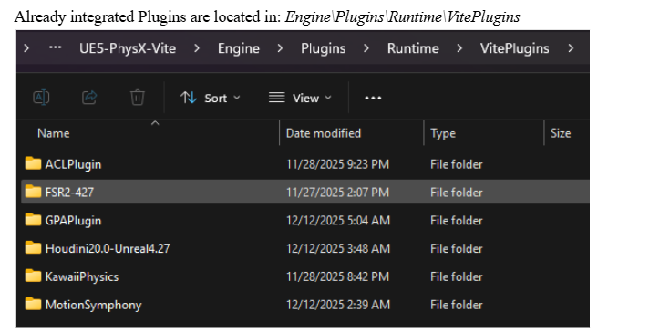

已捆绑的插件
Everything Vite adds on top of stock UE 4.27, with versions and default enablement. Stock 4.27 plugins are not listed — only Vite's additions and the vendor integrations.
Versions are as of the July major integration. Check the .uplugin file for the authoritative value in
your tree.

资源管理器中 Engine/Plugins/Runtime/VitePlugins 目录的内容
Vite 自身添加的插件位于 Engine\Plugins\Runtime\VitePlugins 目录下。NVIDIA 提供的厂商集成插件则位于 Engine\Plugins\Runtime\Nvidia 目录下。
放大和帧生成
| 插件 | 版本 | 默认值 | 路径 |
|---|---|---|---|
| NVIDIA DLSS Super Resolution / Ray Reconstruction / DLAA | 8.7.0 (NGX 310.7.0) | Off | Runtime\Nvidia\DLSS |
| NVIDIA DLSS Frame Generation (Streamline) | 1.3.0-SL2.4.0 | Off | Runtime\Nvidia\Streamline |
| NVIDIA NIS | 1.2.1 | Off | Runtime\Nvidia\NIS |
| NVIDIA RTX Dynamic Vibrance (DeepDVC) | 1.3.0-SL2.4.0 | Off | Runtime\Nvidia\StreamlineDeepDVC |
| AMD FSR 4 | 4.1.1 | — | Runtime\VitePlugins\FSR4-427 |
| AMD AntiLag 2 | 2.0.4 | — | Runtime\VitePlugins\AntiLag2.0.4 |
| Intel XeSS | 3.0.5 | — | Runtime\VitePlugins\XeSS_UE4.27_Plugin_v3.0.5 |
| Movie Render Queue DLSS/DLAA support | 2.3.3 | — | Runtime\Nvidia\DLSSMoviePipelineSupport |
FSR 4 uses the native ffx-api and is DX12-only. It was backported to 4.27 specifically for Vite. Full detail in Upscalers.
光线追踪和渲染
| 插件 | 版本 | 默认 | 路径 |
|---|---|---|---|
| NVIDIA RTX Global Illumination (RTXGI) | 1.1.50 | On | Runtime\Nvidia\RTXGI |
| NVIDIA Real-Time Denoiser (NRD/ReLAX) | 2.10.00-relax | On | Runtime\Nvidia\NRD |
| NVIDIA Reflex | — | — | Runtime\Nvidia\Reflex |
| NVIDIA Ansel | — | — | Runtime\Nvidia\Ansel |
| Graphics Card Info Utilities | 1.0 | Off | Runtime\Nvidia\GraphicsCardInfoUtils |
RTXGI provides the DDGI implementation that is Vite's recommended dynamic GI solution. NRD/ReLAX denoises ray-traced output. Both being on by default is deliberate: they are the basis of Vite's recommended lighting setup. See Global Illumination and Dynamic DDGI.
头发
| 插件 | 版本 | 默认 | 路径 |
|---|---|---|---|
| TressFX 5.0 | 5.0 | — | Runtime\TressFX |
| Groom (HairStrands) | 1.0 | Off | Runtime\HairStrands |
Two independent hair systems with different authoring pipelines. See Hair Rendering.
物理和破坏
| 插件 | 版本 | 默认值 | 路径 |
|---|---|---|---|
| Blast (runtime) | 1.0 | Off | GameWorks\Blast |
| Blast Plugin (authoring) | 0.1 | Off | Experimental\BlastPlugin |
| PhysX Instanced Subsystem | 1.11 | — | Runtime\VitePlugins\PhysXInstancedSubsystem |
| Kawaii Physics | 1.18.0 | — | Runtime\VitePlugins\KawaiiPhysics |
Apex Destruction, Apex Cloth and PhysX Vehicles are stock 4.27 plugins that Vite retains — they were removed in UE5 when Chaos replaced PhysX. See Destruction and Cloth.
Kawaii Physics is a UE5 secondary-motion bone solver backported to Vite. It gives hair, cloth and accessories physical follow-through from a single animation node, far more cheaply than a full cloth simulation.
The PhysX Instanced Subsystem manages large numbers of PhysX-backed instanced bodies through a world subsystem, writing poses back into ISM/HISM instance transforms rather than spawning individual actors. See Instanced Physics.
Animation
| Plugin | Version | Path |
|---|---|---|
| Animation Compression Library (ACL) | 2.1.0 | Runtime\VitePlugins\ACLPlugin |
| Motion Symphony | 1.09 | Runtime\VitePlugins\MotionSymphony |
ACL replaces Unreal's built-in animation compression with a substantially better size/quality curve. On a project with a large animation set the memory saving is significant, and it is one of the cheapest wins available — see Performance Targets.
Motion Symphony provides motion matching and pose matching, the Ubisoft-style approach to animation synthesis. It is the closest 4.27 equivalent to UE5's Motion Matching. Documentation · Sample project
Gameplay
| Plugin | Version | Path |
|---|---|---|
| Abilities (SplashAbilities) | 1.1 | Runtime\VitePlugins\SplashAbilities |
| Flecs ECS | 1.0 (Flecs 3.2.12) | Runtime\FlecsECS |
Abilities is a lighter alternative to GameplayAbilities for projects that want an ability system without
GAS's complexity and replication model.
Flecs ECS is an engine-level integration of the Flecs entity component system, providing a world subsystem, Blueprint entity handles, an ISM-based rendering demo and optional Flecs Explorer support. It is off by default. Useful when actor-per-entity overhead is the bottleneck — see the UE4 vs UE5 cost analysis on core class base costs.
Debug and profiling
| Plugin | Version | Path |
|---|---|---|
| Dear ImGui | 0.1.0 | Runtime\VitePlugins\UnrealImGui |
| ImGui Tools | 1.0 | Runtime\VitePlugins\ImGuiTools |
| Intel GPA | 1.0 | Runtime\VitePlugins\GPAPlugin |
| Automatron | 1.1a | Runtime\VitePlugins\Automatron |
ImGui gives you immediate-mode debug UI that works in the viewport and in standalone builds, where Slate debug widgets are awkward. ImGui Tools builds functional development tools on top of it.
The GPA plugin integrates Intel Graphics Performance Analyzers into the editor. Automatron improves automated testing for C++ and Blueprints. See Profiling.
Content and utilities
| Plugin | Version | Default | Path |
|---|---|---|---|
| Custom Splash Preload Screen | 1.0 | On | Runtime\PostSplashScreen |
| Impostor Baker | 1.0 | — | Experimental\ImpostorBaker |
| Shallow Water | 1.0 | Off | Experimental\ShallowWater |
The splash screen plugin displays a custom screen after the system splash during engine preinit, covering the gap before the first frame.
Impostor Baker generates impostors for use as distant mesh LODs — the standard technique for rendering large numbers of distant trees or props cheaply, and worth reaching for before accepting a draw call cost you cannot afford.
Default enablement summary
Only three bundled plugins are on by default:
| Plugin | Why |
|---|---|
| RTXGI | Provides DDGI, Vite's recommended dynamic GI |
| NRD | Denoises ray-traced output, needed by the ray tracing suite |
| Custom Splash Preload Screen | Cosmetic, negligible cost |
Everything else is opt-in. If a feature appears not to work, check that its plugin is enabled before debugging further — and for ray tracing features, check the compile-time switch availability table as well.